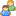
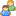

Adding Social Bookmarks
How to add a social bookmark comment relating to a blog entry on the Blog module. Note: Social Bookmarks may be disabled. The following social websites are included on the toolbar: Delicious, Facebook, Digg, Google, Live Bookmarks,  Newsvine, StumbleUpon, Technorati, Yahoo, and  DotNetKicks.
Newsvine, StumbleUpon, Technorati, Yahoo, and  DotNetKicks.
- Locate the required blog entry. See "Viewing Blog Entries for a Month", See "Viewing Blog Entries for a Single Date", or See "Viewing Recent Entries for a Single Blog".
- Click the
 Comments link in the bottom right corner of the View_Blog module.
Comments link in the bottom right corner of the View_Blog module.

- This displays the Social Bookmark toolbar directly below the blog entry.

- Click on an icon to go to the related website where you can login and add your bookmark.